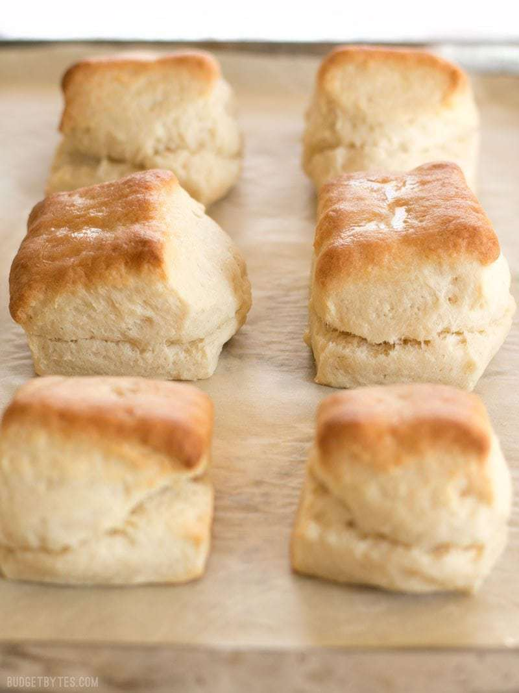

Cheddar Freezer Biscuits

Description
These biscuits are fast and tasty. A batch can be either baked immediatly or frozen to be enjoyed later.
Recipe modified from Budget Bytes 5 Ingredient Freezer Biscuits
Ingredients
- 2 1/2 cups flour plus more for rolling out
- 1 tsp salt and pepper, each
- 1 tsp sugar
- 4 tsp baking powder
- 1 tsp garlic powder
- 1 cup sharp cheddar, shredded
- 2 cups heavy cream
Steps
- In a large bowl, mix the flour, salt, pepper, sugar, baking powder, garlic powder, and cheese.
- Add in the heavy cream and mix until all the flour has been incorperated
- Turn the dough out onto a floured surface with floured hands. Knead the dough a couple times then pat out into a rectangle aproximatly 1 inch thick.
- Fold the dough like a letter then pat out into an inch thick rectangle. Repeat folding and shapping 2 more times
- Cut the dough into 12 even squares
- For baking immediatly: Preheat oven to 400 degrees and bake on a parchment lined baking sheet for 16-20 minutes, or until puffed and golden brown.
- For freezing: Place on a parchment lined sheet and freeze until solid before transferring to a tightly closed container and storing in the freezer.
When ready to eat, remove the disred number of biscuits and place on a parchment covered baking tray. Preheat oven to 400 degrees and bake for 18-22 minutes or until puffed and golden brown.